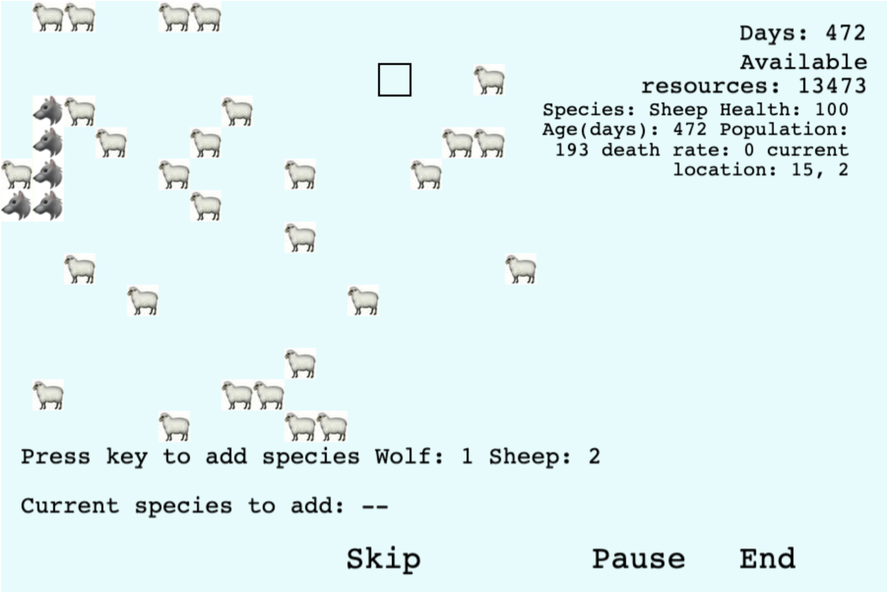

This is a simple guide to show you how the game works
The following image is an example of what you may see in the game. This guide will walk through some elements in the game and show you how to make use of them.
First, you can see some images of animals in the picture. This is the major part of the game, showing the populations. Each indicates a pack of creatures. Predators, such as wolves and cats, will move close to the preys and tend to hang around near them. Preys, in the contrary, tends to stay in a fixed location.
On the right, you can see some values. The first one is "Day". Day is used to evaluate how long the ecosystem has last. The second one is available resources. Its initial value is determined by the environment you chose. It will be consumed by primary consumer. Its amount will be recovered over time. However, the amount of recovery is based on its current value. This means if all resources have been consumed, it will no longer be recovered. Below the available resources are some values of the pack. Moving your cursor on an image, the corresponding information of it will be displayed in this area. The first is the species of the pack you select. The health value indicates how healthy is the population which is impacted by their activities. Next, you can see a death rate value. This also reflects the health of the population. It tells you how likely an individual may die in the near future.
Around the left-bottom of the image, you can see the instructions of adding more creatures. Pressing corresponding keys, you can change the species you wish to add. And when you click on an empty tile, a new pack will be added to the ecosystem. Similarly, clicking on a non-empty tile removes that pack.
In the image below, key 1 is pressed, so the species to add is set to wolf. And an empty tile is selected.
Clicked the empty tile and now a new wolf appears.

Now the cursor selects a sheep tile.
Clicked that tile and that sheep disappears.
Around the right-bottom, you can see three buttons. The skip allows you to jump to the end of the game if you want to skip the wait. Clicking the pause button pauses the game and clicking it again to recover. End button allows you to terminate the game and to go back to the main page.